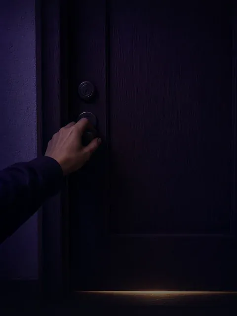
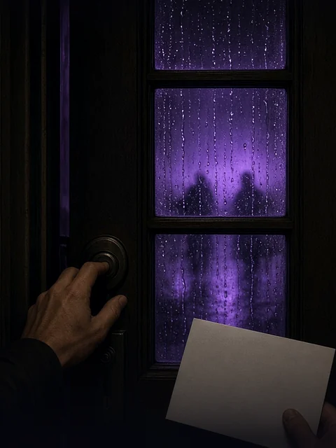
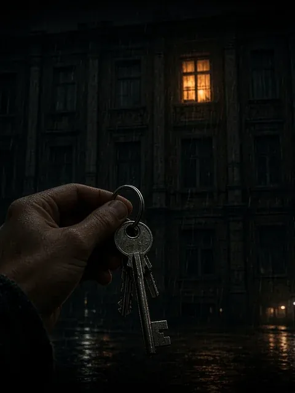

Caminho 01 Atendimento
Recebi uma medida protetiva
Intimação, restrições de contato e distância, filhos, casa e as primeiras providências e o que a decisão exige.
Rede de Proteção
Algumas situações chegam sem aviso: uma intimação, uma medida protetiva, uma acusação, o fim de um casamento. Aqui você encontra, com calma e em linguagem clara, o que a lei diz e quais cuidados tomar antes de decidir.
Liberdade · Família · Patrimônio
Conteúdo informativo. Não substitui a análise individual de cada caso.
Qual é a sua situação?
Para lerO acervo de leitura da Rede: o que fazer, passo a passo, em cada situação. Organizada pelo que aconteceu com você. Leitura livre, sem cadastro.

ArtigoFui ameaçada hoje: como pedir uma medida protetiva e em quanto tempo o juiz decide?Onde pedir, sem advogado e sem boletim de ocorrência como condição,…Onde pedir, sem advogado e sem boletim de ocorrência como condição, o que levar, o que pode ser pedido e os prazos de 48 horas previstos na Lei Maria da Penha. ArtigoDescumpri a medida protetiva. O que pode acontecer?E se foi ela quem procurou o contato…O que diz o art. 24-A da Lei Maria da Penha, o que acontece quando a própria pessoa protegida procura o contato e quais cuidados práticos fazem diferença depois de um descumprimento.
ArtigoDescumpri a medida protetiva. O que pode acontecer?E se foi ela quem procurou o contato…O que diz o art. 24-A da Lei Maria da Penha, o que acontece quando a própria pessoa protegida procura o contato e quais cuidados práticos fazem diferença depois de um descumprimento.  ArtigoRecebi uma medida protetiva. O que faço nas primeiras 48 horas?E se a outra pessoa mandar mensagem primeiro…Contato, armas, descumprimento, filhos, prazo e antecedentes: as perguntas de quem acabou de ser intimado.
ArtigoRecebi uma medida protetiva. O que faço nas primeiras 48 horas?E se a outra pessoa mandar mensagem primeiro…Contato, armas, descumprimento, filhos, prazo e antecedentes: as perguntas de quem acabou de ser intimado.  ArtigoEla pediu medida protetiva. E agora, posso ver meus filhos?E o aniversário do seu filho, no mês que vem…Quando a medida protetiva alcança os filhos, o que acontece com a convivência e a guarda, e como pedir ao juiz que regule as visitas.
ArtigoEla pediu medida protetiva. E agora, posso ver meus filhos?E o aniversário do seu filho, no mês que vem…Quando a medida protetiva alcança os filhos, o que acontece com a convivência e a guarda, e como pedir ao juiz que regule as visitas.  ArtigoA medida protetiva vai aparecer no meu concurso ou emprego?O que aparece na certidão, e o que não…O que a medida protetiva registra, o que aparece numa certidão de antecedentes e como ela pode repercutir em concurso, emprego e viagem.
ArtigoA medida protetiva vai aparecer no meu concurso ou emprego?O que aparece na certidão, e o que não…O que a medida protetiva registra, o que aparece numa certidão de antecedentes e como ela pode repercutir em concurso, emprego e viagem.  ArtigoEla chegou onde eu estava. Tenho que ir embora?O que acontece se você ficar no local…Chegar primeiro não protege ninguém. O que conta é o que você faz depois de perceber a presença dela.
ArtigoEla chegou onde eu estava. Tenho que ir embora?O que acontece se você ficar no local…Chegar primeiro não protege ninguém. O que conta é o que você faz depois de perceber a presença dela.  Página · triagemRecebi uma medida protetiva: o que fazer após a intimaçãoO que observar nas próximas horas, em ordem…Recebeu uma medida protetiva em Imperatriz-MA? Veja o que fazer após a intimação (Lei Maria da Penha), o que evitar e quando procurar um advogado. Lucas Brito Ladeia, OAB/MA 16.091.
Página · triagemRecebi uma medida protetiva: o que fazer após a intimaçãoO que observar nas próximas horas, em ordem…Recebeu uma medida protetiva em Imperatriz-MA? Veja o que fazer após a intimação (Lei Maria da Penha), o que evitar e quando procurar um advogado. Lucas Brito Ladeia, OAB/MA 16.091.  PáginaRecebi uma medida protetiva. O que a decisão exige?O que a decisão exige, ponto por ponto…O que é a medida protetiva da Lei Maria da Penha, o que evitar após a intimação e quais providências ajudam a cumprir a decisão. Conteúdo informativo.
PáginaRecebi uma medida protetiva. O que a decisão exige?O que a decisão exige, ponto por ponto…O que é a medida protetiva da Lei Maria da Penha, o que evitar após a intimação e quais providências ajudam a cumprir a decisão. Conteúdo informativo. 
ArtigoRecebi um mandado de busca e apreensão. O que a polícia pode fazer dentro da minha casa?Com mandado, a polícia pode entrar de dia e apreender o que se…Com mandado, a polícia pode entrar de dia e apreender o que se relaciona ao fato. Veja o que o mandado deve conter, como a busca deve ser feita, seus direitos durante a diligência e o que evitar. ArtigoFui intimado da medida e mandei mensagem. E agora?Uma mensagem sem ameaça também conta…Uma mensagem sem ameaça, enviada depois da intimação, pode configurar o crime do art. 24-A da Lei Maria da Penha. Entenda o que a lei diz e o que fazer.
ArtigoFui intimado da medida e mandei mensagem. E agora?Uma mensagem sem ameaça também conta…Uma mensagem sem ameaça, enviada depois da intimação, pode configurar o crime do art. 24-A da Lei Maria da Penha. Entenda o que a lei diz e o que fazer.  ArtigoFui intimado a depor. Sou obrigado a ir? Posso ficar calado?Testemunha ou investigado? A intimação nem sempre diz…Testemunha ou investigado: o que muda, quando é possível ficar em silêncio e por que ir com advogado.
ArtigoFui intimado a depor. Sou obrigado a ir? Posso ficar calado?Testemunha ou investigado? A intimação nem sempre diz…Testemunha ou investigado: o que muda, quando é possível ficar em silêncio e por que ir com advogado.  ArtigoFui acusado de algo que não fiz. O que faço antes de depor?Ligar para quem acusou parece resolver…Direito ao silêncio, acesso aos autos, preservação de provas e o que não fazer com quem acusou, antes do depoimento na delegacia.
ArtigoFui acusado de algo que não fiz. O que faço antes de depor?Ligar para quem acusou parece resolver…Direito ao silêncio, acesso aos autos, preservação de provas e o que não fazer com quem acusou, antes do depoimento na delegacia. 
ArtigoMeu ex ficou com a casa depois da separação. Posso pedir aluguel pelo uso exclusivo?Quem usa sozinho um imóvel comum pode ter de compensar o outro…Quem usa sozinho um imóvel comum pode ter de compensar o outro. Veja quando cabe, o que pesa na análise, como ficam filhos e despesas e os caminhos de acordo, notificação, ação e venda do imóvel. ArtigoMeu filho fez 18. Posso parar de pagar a pensão?O que muda no dia em que ele faz 18…A pensão não termina sozinha em nenhuma idade. O que muda na maioridade e qual é o caminho correto para encerrar a obrigação.
ArtigoMeu filho fez 18. Posso parar de pagar a pensão?O que muda no dia em que ele faz 18…A pensão não termina sozinha em nenhuma idade. O que muda na maioridade e qual é o caminho correto para encerrar a obrigação.  ArtigoA guarda é compartilhada. Ainda preciso pagar pensão?Compartilhada não quer dizer metade…Guarda compartilhada não é metade para cada um e não elimina a pensão. Entenda como as despesas do filho se dividem.
ArtigoA guarda é compartilhada. Ainda preciso pagar pensão?Compartilhada não quer dizer metade…Guarda compartilhada não é metade para cada um e não elimina a pensão. Entenda como as despesas do filho se dividem.  ArtigoTive que sair de casa. Perco a guarda ou o imóvel?A casa continua sendo sua enquanto…O afastamento do lar é provisório. Veja o que acontece com o imóvel, a guarda, as visitas e a pensão.
ArtigoTive que sair de casa. Perco a guarda ou o imóvel?A casa continua sendo sua enquanto…O afastamento do lar é provisório. Veja o que acontece com o imóvel, a guarda, as visitas e a pensão.  ArtigoPerdi o emprego. Como fica a pensão que eu pago?A pensão não para sozinha quando…A obrigação não para sozinha quando o emprego acaba. O caminho é pedir a revisão ao juiz logo e pagar o que for possível enquanto isso.
ArtigoPerdi o emprego. Como fica a pensão que eu pago?A pensão não para sozinha quando…A obrigação não para sozinha quando o emprego acaba. O caminho é pedir a revisão ao juiz logo e pagar o que for possível enquanto isso.  PáginaFamília, guarda, pensão e patrimônioGuarda, pensão e bens, cada um no seu tempo…Respostas objetivas sobre pensão, alimentos gravídicos, divórcio, guarda, união estável, regime de bens e contrato de namoro. Conteúdo informativo.
PáginaFamília, guarda, pensão e patrimônioGuarda, pensão e bens, cada um no seu tempo…Respostas objetivas sobre pensão, alimentos gravídicos, divórcio, guarda, união estável, regime de bens e contrato de namoro. Conteúdo informativo.  ArtigoSou CAC e virei investigado. Perco meu CR e minhas armas?O inquérito suspende o CR sozinho…Inquérito e processo não cancelam o CR sozinhos, mas podem levar a suspensão cautelar e cassação na PF. O que dizem o Estatuto, o Decreto 11.615/2023 e a IN DG/PF 311/2025.
ArtigoSou CAC e virei investigado. Perco meu CR e minhas armas?O inquérito suspende o CR sozinho…Inquérito e processo não cancelam o CR sozinhos, mas podem levar a suspensão cautelar e cassação na PF. O que dizem o Estatuto, o Decreto 11.615/2023 e a IN DG/PF 311/2025.  ArtigoSou CAC e recebi medida protetiva. O que acontece com meu acervo?E o acervo que está em casa…Suspensão da posse, apreensão do acervo, cassação do CR e restituição: o que dizem a Lei Maria da Penha, o Decreto 11.615/2023 e a IN DG/PF 311/2025.
ArtigoSou CAC e recebi medida protetiva. O que acontece com meu acervo?E o acervo que está em casa…Suspensão da posse, apreensão do acervo, cassação do CR e restituição: o que dizem a Lei Maria da Penha, o Decreto 11.615/2023 e a IN DG/PF 311/2025.  PáginaSou CAC e recebi uma medida protetiva. E o meu acervo?Entregar, apreender ou manter onde está…O que a Lei Maria da Penha prevê sobre posse, porte, entrega ou apreensão de arma de CAC e como organizar a documentação do acervo. Conteúdo informativo.
PáginaSou CAC e recebi uma medida protetiva. E o meu acervo?Entregar, apreender ou manter onde está…O que a Lei Maria da Penha prevê sobre posse, porte, entrega ou apreensão de arma de CAC e como organizar a documentação do acervo. Conteúdo informativo.  Mundo em DisputaCaso Nvidia: o CEO sob investigação interna e a pergunta que decide qualquer prova digitalNa prova digital, o lacre é um número. Se ele muda, a história muda.O conselho da Nvidia abriu investigação para apurar se Jensen Huang foi alvo de inteligência estrangeira. Ninguém foi acusado de crime. O caso ilumina a regra que decide o destino de mensagens, prints e celulares: a cadeia de custódia, e o que o direito brasileiro faz com prova que perdeu o rastro.
Mundo em DisputaCaso Nvidia: o CEO sob investigação interna e a pergunta que decide qualquer prova digitalNa prova digital, o lacre é um número. Se ele muda, a história muda.O conselho da Nvidia abriu investigação para apurar se Jensen Huang foi alvo de inteligência estrangeira. Ninguém foi acusado de crime. O caso ilumina a regra que decide o destino de mensagens, prints e celulares: a cadeia de custódia, e o que o direito brasileiro faz com prova que perdeu o rastro.  Mundo em DisputaDepp x Heard: o mesmo casamento, dois tribunais e dois veredictos opostosUm casamento. Dois países. Dois veredictos opostos.Em Londres, a Justiça concluiu que um jornal podia chamar Johnny Depp de agressor. Na Virgínia, um júri decidiu que Amber Heard o difamou. Como as regras do processo explicam dois resultados opostos, e o que mudaria no Brasil.
Mundo em DisputaDepp x Heard: o mesmo casamento, dois tribunais e dois veredictos opostosUm casamento. Dois países. Dois veredictos opostos.Em Londres, a Justiça concluiu que um jornal podia chamar Johnny Depp de agressor. Na Virgínia, um júri decidiu que Amber Heard o difamou. Como as regras do processo explicam dois resultados opostos, e o que mudaria no Brasil. Para ser atendido
Os artigos acima ajudam a entender. Aqui estão as frentes em que o advogado atende: cada caminho tem uma página que explica como a conversa acontece. Cada caso é analisado individualmente, sem promessa de resultado.
Ver as três etapas em detalhe Prefere explicar direto? WhatsApp
Caminho 01 Atendimento
Intimação, restrições de contato e distância, filhos, casa e as primeiras providências e o que a decisão exige.

Caminho 02 Atendimento
Defesa técnica, sob sigilo. Intimação para depor, acusação, busca e apreensão ou inquérito aberto: o que significa cada momento e como o atendimento é conduzido.

Caminho 03 Atendimento
O que a Lei Maria da Penha prevê sobre posse e porte, entrega ou apreensão de arma, e como organizar a documentação.

Caminho 04 Atendimento
Separação, união estável, convivência com filhos, pensão alimentícia e divisão de bens — orientação objetiva.
Material para estudar
Conteúdo editorial, separado do atendimento. Guias em e-book sobre medida protetiva, CAC e Direito de Família, em linguagem acessível.

Responsável pela Rede de Proteção
Lucas Brito Ladeia, advogado inscrito na OAB/MA sob o nº 16.091, com atuação desde 2016. Atendimento presencial em Imperatriz-MA e online para pessoas em todo o Brasil.
Cada caso é analisado individualmente, com exposição dos riscos e das possibilidades, sem promessa de resultado.
Ver canais de contatoJornada
Três etapas simples. Cada caso é analisado individualmente; ninguém pode garantir resultado.
Você escolhe a área e envia uma mensagem pelo WhatsApp, ou usa a página do problema. Informe o essencial e se há prazo ou audiência.
O advogado analisa a decisão, os documentos disponíveis e as restrições aplicáveis, e explica o que cada ponto significa na prática.
Indicação das providências possíveis, dos riscos relevantes e da forma de contratação, se houver interesse mútuo em seguir.
Dúvidas frequentes

Contato
Indique a área (medida protetiva, criminal, CAC ou família). A triagem pede só o necessário para a primeira orientação.